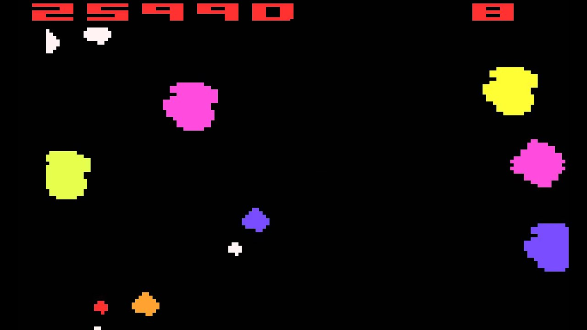
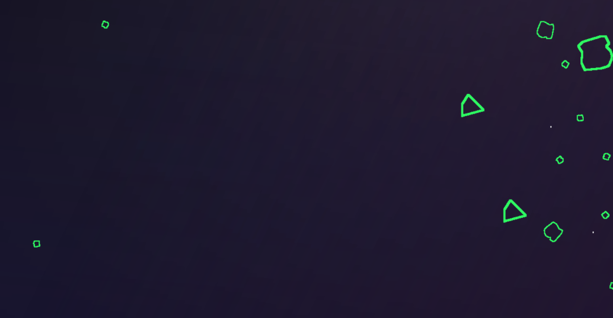
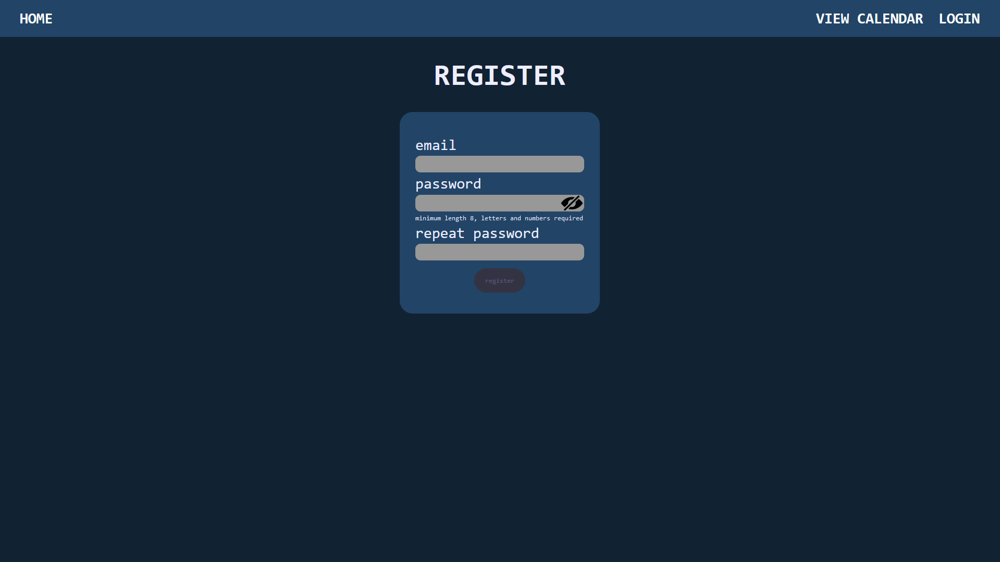
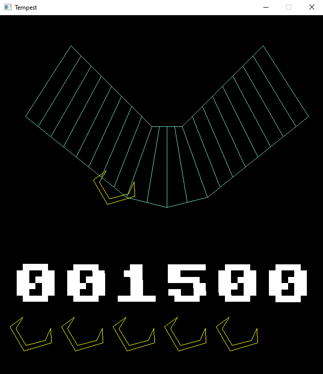
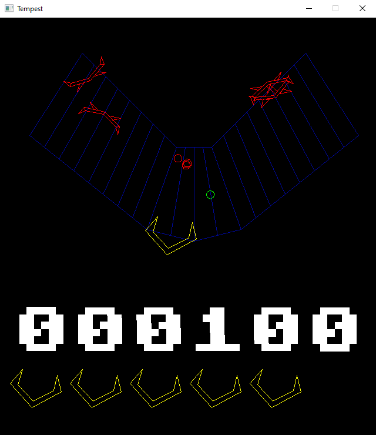
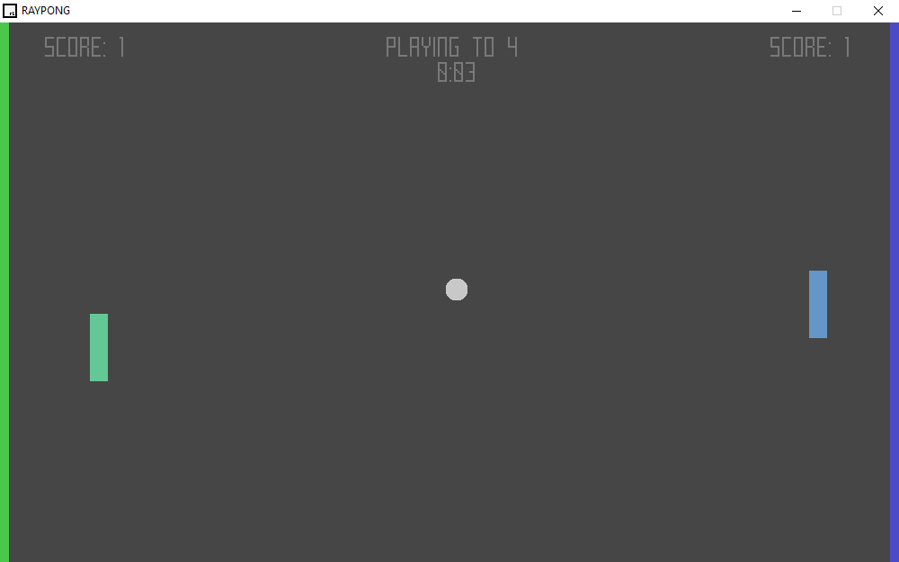
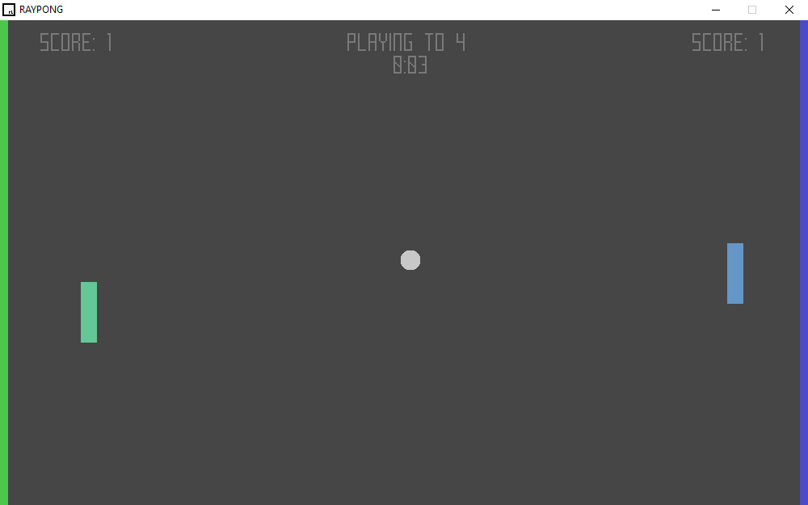

Moje projekty
Zbiór projektów, z których jestem najbardziej dumny.
RAYPONG
GitHub
W zeszłym roku po długim czasie pracowania jedynie w JS postanowiłem wrócić do mojego ulubionego języka - C++.
Już wcześniej chciałem zabrać się za stworzenie gry. Wyszedłem z założenia, że zanim zacznę pracować w silniku typu Unity czy Godot powinienem potrafić skończyć projekt bez używania silnika. Wybrałem rekreację kultowej gry komputerowej Pong.
Gra używa biblioteki graficznej raylib. Grać można w trybie dwuosobowym, jak i w pojedynkę przeciwko komputerowi. Gra posiada system osiągnięć, które odblokowują alternatywne palety kolorów.
Motorola Science Cup


Strona konkursu
Na początku roku szkolnego, razem z kilkoma kolegami zgłosiliśmy się do konkursu Motorola Science Cup. Konkurs ma na celu "popularyzację Technologii Informatycznych oraz nauk ścisłych" wśród uczniów szkół ponadpodstawowych.
Konkurs dzieli się na etapy, pierwszym było poprawne napisanie testu wielokrotnego wyboru łączącego dziedziny takie jak matematyka czy fizyka. Odpowiedzieliśmy na pytania poprawnie i dostaliśmy się dalej.
Drugi etap polegał na wybraniu jednego z trzech projektów i dostarczenie go w określonym terminie. Spośród podanych wybraliśmy rekreację trzech gier na konsolę Atari 2600 z wykorzystaniem grafiki wektorowej.
Zespół pięciu osób podzieliliśmy na dwa oddziały mające zająć się rekreacją poszczególnych gier.
Zaszliśmy bardzo daleko, w pełni skończyliśmy odtwarzać gry Tempest i Asteroids, a ostatnia - Battlezone była bliska ukończeniu. Jednak w ostatniej chwili - tuż przed oddaniem prac - okazało się, że biblioteki graficzne takie jak OpenGL, czy użyty przez nas SDL były wbrew regulaminowi.
Obecnie jesteśmy tydzień przed oddaniem prac, oddamy to co mamy i damy komisji zadecydować co dalej. Pomimo przykrego ostatecznego losu projektu bardzo dobrze się przy nim bawiliśmy i nauczyliśmy się wiele rzeczy z zakresu tworzenia i projektowania gier komputerowych.
Faces of America
Strona konkursu
Kilka tygodni temu dostałem informację o konkursie organizowanym przez Uniwersytet Marii Curie-Skłodowskiej w Lublinie.
Faces of America to konkurs sprawdzający wiedzę o historii i kulturze Stanów Zjednoczonych oraz ogólnej z języka angielskiego. Interesuję się tematem, więc wraz z dwoma kolegami zapisaliśmy się do konkursu jako zespół.
Konkurs dzieli się na trzy etapy, pierwszym z nich było nakręcenie krótkiego filmu promującego UMCS w formacie TikToka. Nie byliśmy zachwyceni, bo od samego początku wiedzieliśmy jaki będzie efekt końcowy. Nagraliśmy film, w którym omawiamy uczelnię i wszystkie jej zalety; wyszło całkiem sztucznie, jak segment sponsorski na YouTubie. Podejrzewany, że filmy zespołów z innych szkół wyszły podobnie.
Pierwszy etap nie był najprzyjemniejszy, ale mamy nadzieję, że nasz praca się opłaci. Całokształt imprezy zapowiada się bardzo obiecująco, do wygrania są ciekawe nagrody i razem z udziałem wiąże się kilka dni zwiedzania Lublina.
Rouletta Italiana
Link do filmu
Miesiąc temu w ramach lekcji informatyki dostaliśmy zadanie nagrać film; tematyka dowolna. Jako, że bardzo lubię nagrywać i montować filmy zdecydowałem się nagrać film fabularny.
Od samego początku wiedziałem, że chcę nagrać coś poważniejszego. Trafiło na rosyjską ruletkę. Pomysłów było wiele, ale finalny scenariusz to dwóch kolegów grających w ruletkę, po szantażu mafii.
Pomysły na kadry, sceny, myzkę przyszły do mnie od razu. Uwielbiam element kreatywny związany z reżyserowaniem filmów. W weekend pojechaliśmy do mojego kolegi Piotra i wszystko nagraliśmy. Montaż (jak zawsze) był bolesny i żmudny ale (jak zawsze) efekt końcowy był w pełni wart tego bólu. Z filmu jestem bardzo dumny.
Calendar.js


W zeszłym roku naszedł mnie pomysł na aplikację - kalendarz samopoczucia. Pierwotnie chciałem stworzyć aplikację mobilną, ale jako pierwszy chciałem stworzyć prototyp w przeglądarce (stąd PROTO w nazwie repozytorium).
Aplikacja posiada możliwość codziennego zalogowania i ocenienia swojego samopoczucia tego danego dnia. Wszystkie dni można zobaczyć w formie kalendarza z widokiem na większą skalę czasu.
Na poziomie technicznym wyzwanie stanowiło stworzenie panelu oceny dnia, które na bazie pozycji kursora przydzielałoby ocenie kolor i łatkę. Nie było to najłatwiejsze, ale po kilku dniach miałem działającą wersję.
O wiele gorszym było stworzenie działającego kalendarza. Przy tworzeniu kalendarza tabelarycznego trzeba zwrócić dużą uwagę na dni tygodnia, zmienną długość miesięcy, lata przestępne i wiele więcej. Problem wydawał się bardzo skomplikowany, więc od razu zacząłem szukać biblioteki pozwalającej na łatwiejszą pracę z datami. Finalnie niczego nie znalazłem i zostałem zmuszony napisać własny moduł.
TEMPEST 2024



Podczas tworzenia projektu na Motorola Science Cup mój zespół dostał za zadania rekreację gry Tempest z katalogu Atari 2600.
Celem w Tempest jest strzelanie do wrogich statków kosmicznych poruszając się po jednowymiarowej szynie. Na poziomie technicznym gra jest bardzo prosta, większym wyzwaniem było napisanie silnika graficznego.
Gra musiała używać grafiki wektorowej. Jednak zamiast używać istniejącej biblioteki do obróbki plików svg takiej jak NanoSVG postanowiliśmy stworzyć własny format.
Oprócz matematyki związanej z przekształcaniem grafiki wektorowej nauczyliśmy się też dużo z zakresu samej biblioteki SDL. Jest bardzo wygodna w użyciu, a z dodatkowym modułami pozwala na bardziej zaawansowane funkcjonalności takie jak renderowanie tekstu czy odtwarzanie dźwięku.
Szkoda tylko, że jej użycie nie było dozwolone.
 
